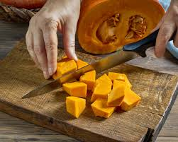
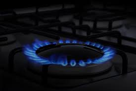
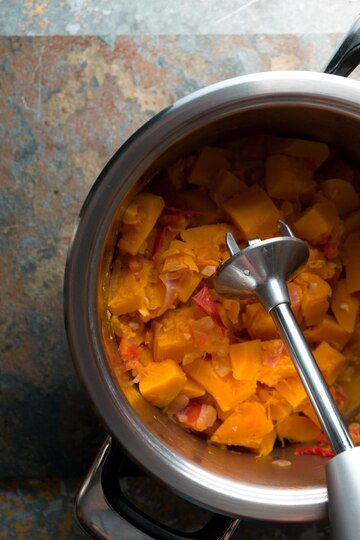
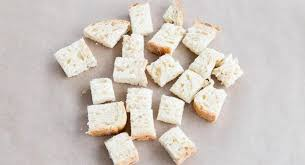
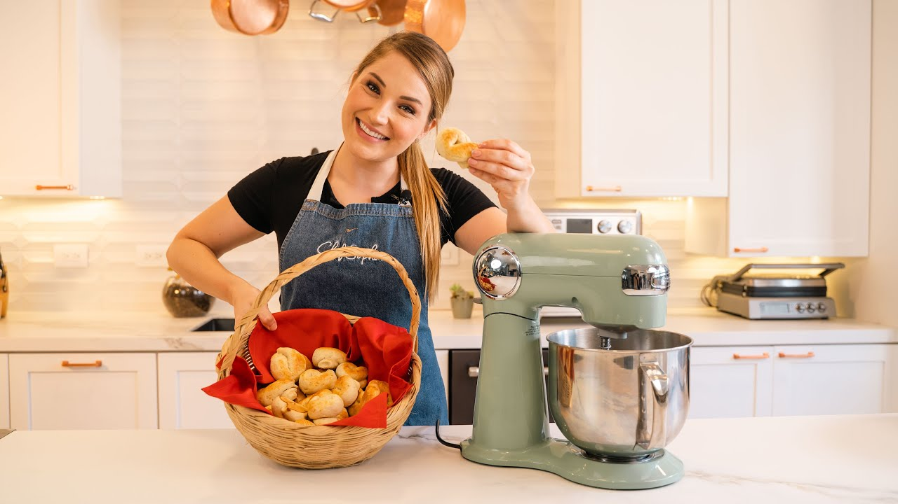
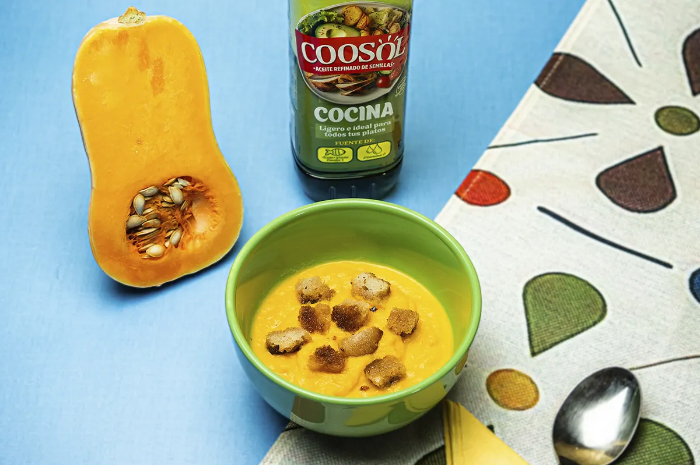

Cóm fer crema de carabassa amb encalls de serrà o crostons de pà torrat
Tornar a la página principal 
INDEX DE CONTINGUTS
Ingredients
Pas a pas
Resultat Final
Ingredients
- 100 ml de llet
- 500ml de brou pollastre
- Oli de gira-sol
- Pà per fer picatostes
- Sal i pebre
- Un gra d'all
- Carbassa de tamany mitjà
- Una ceba
Pas a pas
- Primer pas: En primer lloc, curta la carabassa en trossos petits i pica la ceba i l'all finament.

- Segon pas: Col·loca una casserola a foc mitjà amb una mica d'oli de gira-sol i afegeix la ceba i l'all. Sofregeix durant uns minuts fins que estiguin daurats.

- Tercer pas: Afegeix els trossos de carabassa a la casserola i salta durant 5 minuts. Després, agrega el brou de pollastre, la llet i la sal i el pebre al gust. Deixa que tot bulli a foc mig-baix durant uns 20 minutos fins que la carabassa estigui suau.

- Quart pas: Mentrestant, tala el pa en trossos petits per a fer els crostons. Escalfa una mica d'oli en una paella i fregeix el pa fins que estiguin daurats.

- Cinquè pas: Una vegada que la carabassa estigui suau, utilitza una batedora de mà per a barrejar tot fins a obtenir una consistència suau i cremosa. Si la crema està massa espessa, afegeix una mica més de brou de pollastre o llet.

Resultat Final

Tornar a encapçalament principal